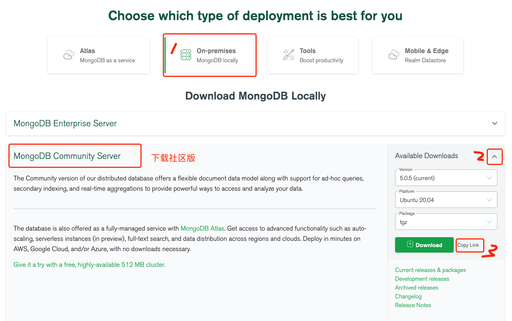

请输入密码以继续访问
以Linux平台为例安装MongoDB
MongoDB 提供了 linux 各个发行版本 64 位的安装包，你可以在官网下载安装包。
MongoDB 源码下载地址：https://www.mongodb.com/download-center#community

如上图所示选择版本、平台、压缩包后直接下载或复制下载地址Linux系统中使用 wget 下载。
这里我们选择 tgz 下载，下载完安装包，并解压 tgz（以下演示的是 64 位 Linux上的安装） 。
# 下载
wget https://fastdl.mongodb.org/linux/mongodb-linux-x86_64-ubuntu2004-5.0.5.tgz
# 解压
tar -zxvf mongodb-linux-x86_64-ubuntu2004-5.0.5.tgz
# 将解压包拷贝到 mongodb 安装目录
sudo mv mongodb-linux-x86_64-ubuntu2004-5.0.5 /usr/local/mongodb5
MongoDB 的可执行文件位于 bin 目录下，所以可以将其添加到 PATH 路径中：
export PATH=/usr/local/mongodb5/bin:$PATH默认情况下 MongoDB 启动后会初始化以下两个目录：
我们在启动前可以先创建这两个目录并设置当前用户有读写权限：
sudo mkdir -p /var/lib/mongo
sudo mkdir -p /var/log/mongodb
sudo chown `whoami` /var/lib/mongo # 设置权限
sudo chown `whoami` /var/log/mongodb # 设置权限接下来启动 Mongodb 服务：
mongod --dbpath /var/lib/mongo --logpath /var/log/mongodb/mongod.log --fork参数说明
--dbpath 设置数据存放目录
--logpath 设置日志存放目录
--fork 在后台运行，无该参数则前台运行
--port 指定端口号 默认为 27017
--bind_ip 监听的IP地址，可有多个，用逗号分隔 ；默认情况下为localhost 只允许本机访问；
--bind_ip_all 绑定到所有ip地址打开 `/var/log/mongodb/mongod.log 文件看到以下信息，说明启动成功。
# tail -10f /var/log/mongodb/mongod.log
2020-07-09T12:20:17.391+0800 I NETWORK [listener] Listening on /tmp/mongodb-27017.sock
2020-07-09T12:20:17.392+0800 I NETWORK [listener] Listening on 127.0.0.1
2020-07-09T12:20:17.392+0800 I NETWORK [listener] waiting for connections on port 27017通过命令启动的方式并不适合管理，毕竟每次输入命令都需要考虑各参数的配置。我们可以通过指定配置文件的方式启动服务，这样在管理 MongoDB 上就比较方便了。
创建配置文件 /etc/mongod.conf
# 数据库文件位置
dbpath=/var/lib/mongodb
#日志文件的路径
logpath=/var/log/mongodb/mongodb.log
# 是否追加方式写入日志，默认True
logappend=true
# 设置绑定ip
bind_ip = 127.0.0.1
# 设置端口
port = 27017
# 是否以守护进程方式运行，默认false
fork = true
# 启用日志文件，默认启用
journal=true
# 启用定期记录CPU利用率和 I/O 等待,默认false
#cpu = true
# 是否以安全认证方式运行，默认是不认证的非安全方式
#noauth = true
#auth = true
# 详细记录输出，默认false
#verbose = true
#用于开发驱动程序时验证客户端请求
#objcheck = true
# # 启用数据库配额管理,默认false
#quota = true
# 设置oplog日志记录等级，默认0
# 0=off (default)
# 1=W
# 2=R
# 3=both
# 7=W+some reads
#oplog = 0
# 是否打开动态调试项，默认false
#nocursors = true
# 忽略查询提示，默认false
#nohints = true
# 禁用http界面，默认为localhost：28017
#nohttpinterface = true
# 关闭服务器端脚本，这将极大的限制功能，默认false
#noscripting = true
# 关闭扫描表，任何查询将会是扫描失败
#notablescan = true
# 关闭数据文件预分配
#noprealloc = true
# 为新数据库指定.ns文件的大小，单位:MB
# nssize = <size>
# 用于Mongo监控服务器的Accout token。
#mms-token = <token>
# Mongo监控服务器的服务器名称。
#mms-name = <server-name>
# Mongo监控服务器的Ping间隔时间，即心跳
#mms-interval = <seconds>
# Replication Options
# 设置主从复制参数
#slave = true # 设置从节点
#source = master.example.com # 指定从节点的主节点
# Slave only: 指定要复制的单个数据库
#only = master.example.com
# or
#master = true # 设置主节点
#source = slave.example.com
# 设置副本集的名字，所有的实例指定相同的名字属于一个副本集
replSet = name
#pairwith = <server:port>
# 仲裁服务器地址
#arbiter = <server:port>
# 默认为false，用于从实例设置。是否自动重新同步
#autoresync = true
# 指定的复制操作日志（OPLOG）的最大大小
#oplogSize = <MB>
# 限制复制操作的内存使用
#opIdMem = <bytes>
# 设置ssl认证
# Enable SSL on normal ports
#sslOnNormalPorts = true
# SSL Key file and password
#sslPEMKeyFile = /etc/ssl/mongodb.pem
#sslPEMKeyPassword = pass根据配置文件启动服务
mongod -f /etc/mongod.conf如果你需要进入 mongodb 后台管理，你需要先打开 mongodb 装目录的下的 bin 目录，然后执行 mongo 命令文件。
MongoDB Shell 是 MongoDB 自带的交互式 Javascript shell，用来对 MongoDB 进行操作和管理的交互式环境。
当你进入 mongoDB 后台后，它默认会链接到 test 文档（数据库）：
$ cd /usr/local/mongodb5/bin
$ ./mongo
MongoDB shell version v5.0.5
connecting to: mongodb://127.0.0.1:27017/?compressors=disabled&gssapiServiceName=mongodb
Implicit session: session { "id" : UUID("023f2b4a-1bfb-41c2-9f88-97270fc1dda8") }
MongoDB server version: 5.0.5
......
注意：mongo已废弃，建议安装 mongosh, 参考文档
现在让我们插入一些简单的数据，并对插入的数据进行检索：
> db.runoob.insert({x:10})
WriteResult({ "nInserted" : 1 })
> db.runoob.find()
{ "_id" : ObjectId("5f069bdb4e02f8baf90f1184"), "x" : 10 }
> 第一个命令将数字 10 插入到 runoob 集合的 x 字段中。
如果要停止 mongodb 可以使用以下命令：
mongod --dbpath /var/lib/mongo --logpath /var/log/mongodb/mongod.log --shutdown也可以在 mongo 的命令出口中实现：
> use admin
switched to db admin
> db.shutdownServer()[1] https://www.mongodb.com/download-center#community: https://www.mongodb.com/download-center#community[2] 参考文档: //wangmaolin.net/article/j25v19qe1n.html